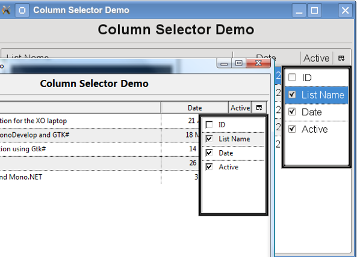

Title: Article Title Goes Here
Author: Author Name
Email: author@email.com
Member ID: 12345
Language: C++, C# 2.0 etc
Platform: Windows, .NET 3.0 etc
Technology: ASP.NET, GDI+
Level: Beginner, Intermediate, Advanced
Description: An article on something-or-other
Section Suggest a section...
SubSection Suggest a subsection...
License: Choose your license (CPOL, CPL, MIT, etc)

I was needing a way to select what columns needed to be visible for a Mono/Gtk# application. There is no default right click select for the TreeView so I desided to use an empty column header similar to the way Mozilla's Thunderbird uses.
This article assume the reader has at least the basic concepts of using the Gtk TreeView and a ListStore. If not there are some great started guides located at Mono-Project web site located below under "Points of Interest".
A brief description of how to use the article or code. The class names, the methods and properties, any tricks or tips.
Blocks of code should be wrapped in <pre> tags like this:
//
// Any source code blocks look like this
//
Variable or class names should be wrapped in
<code> tags like this.
Did you learn anything interesting/fun/annoying while writing the code? Did you do anything particularly clever or wild or zany?
The following are a few resource I found helpful with this project:
Keep a running update of any changes or improvements you've made here.